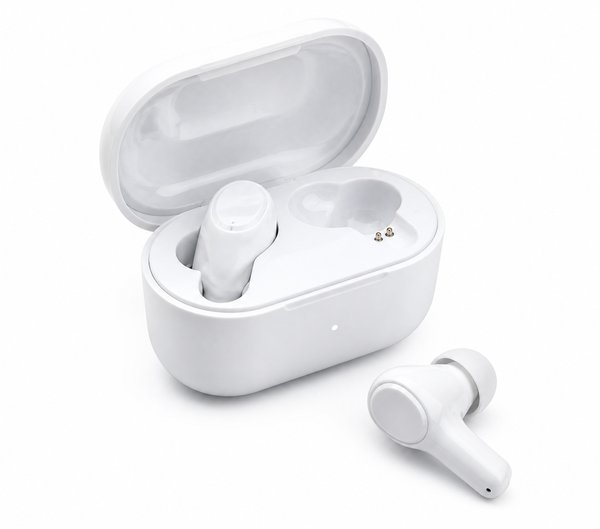
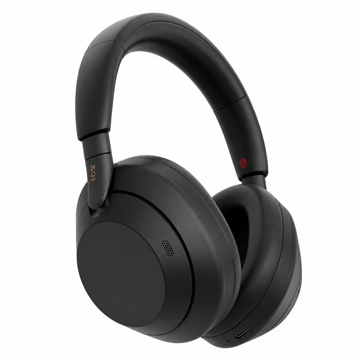
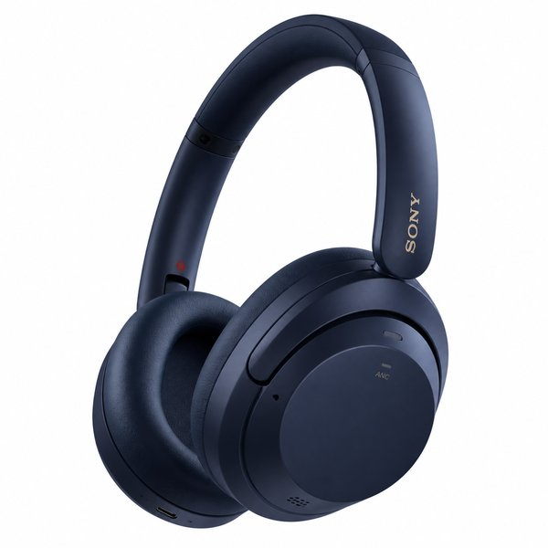
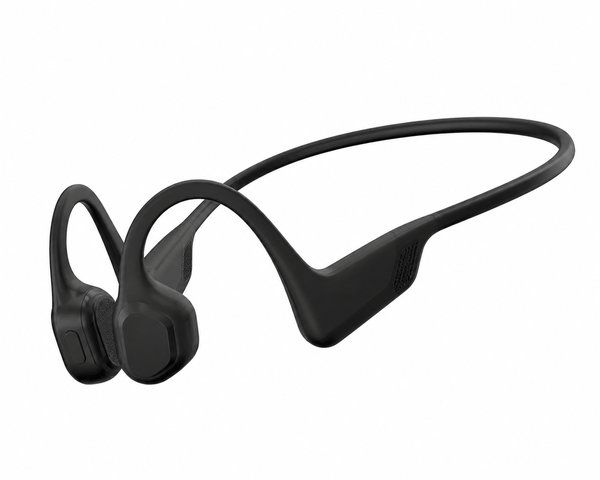
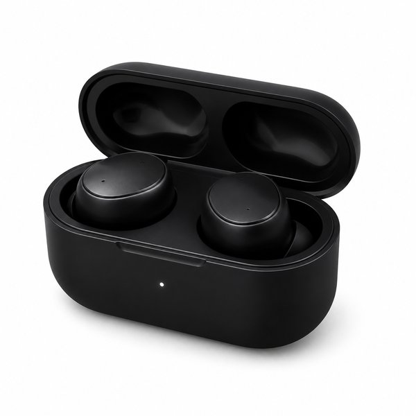
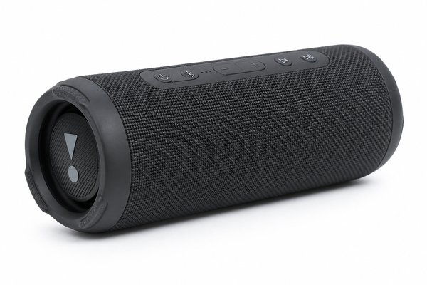
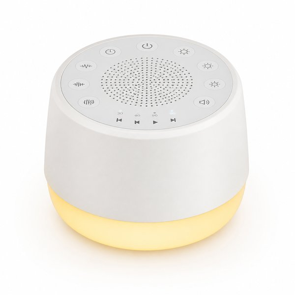
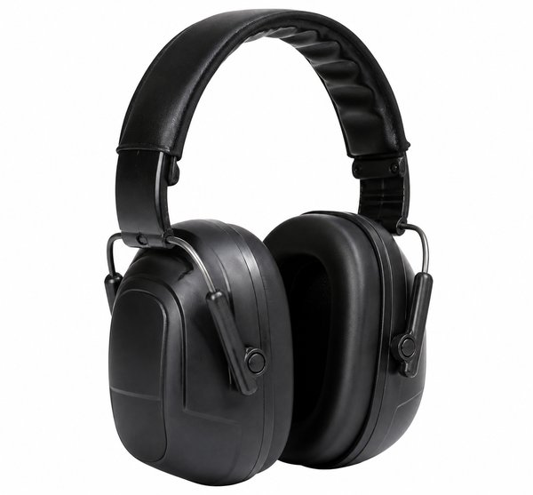
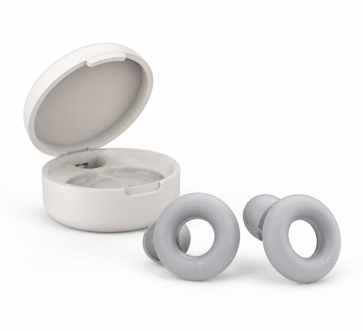

【2026年最新】在宅ワーク＆勉強が圧倒的に捗る！ノイズキャンセリング・神オーディオおすすめ10選
在宅勤務中の家族の生活音、近所の工事の音、カフェや図書館での話し声——何かに深く集中したいとき、周囲の雑音は最大のストレスになりますよね。
「耳につけた瞬間、静寂の世界に入りたい」「長時間のWeb会議でも耳が痛くならないイヤホンが欲しい」というニーズは、最新のオーディオ技術が完璧に叶えてくれます。
本記事では、PC作業や読書に没頭したい編集部が実際に試し、「集中力が倍以上になった！」と感動した、在宅ワークや勉強が圧倒的に捗る神ノイズキャンセリング＆オーディオ10選をご紹介します。
- おすすめ10選 スペック・特徴比較表
- BEST 1｜ワイヤレスノイズキャンセリングステレオヘッドセット WH-1000XM5
- BEST 2｜AirPods Pro (第2世代) MagSafe充電ケース (USB-C)
- BEST 3｜QuietComfort Ultra Headphones 空間オーディオ対応
- BEST 4｜Soundcore Space Q45 ワイヤレスヘッドホン ハイレゾ対応
- BEST 5｜OpenRun Pro 骨伝導イヤホン 急速充電対応
- BEST 6｜Air Pro 4 完全ワイヤレスイヤホン LDAC対応 最大50dB低減
- BEST 7｜FLIP 6 ポータブルBluetoothスピーカー 2ウェイスピーカー
- BEST 8｜ホワイトノイズマシン D11 ナイトライト＆タイマー付き
- BEST 9｜PELTOR 防音イヤーマフ X5A 高遮音性モデル
- BEST 10｜Loop Quiet 2 睡眠＆集中用シリコン耳栓 24dB低減
- 🎁【読者限定】完全無料で試せる人気サービス
- まとめ：生活をラクにする最初の一歩
| 順位 | 商品名 | ブランド | 最大の特徴・おすすめ理由 | 総合評価 |
|---|---|---|---|---|
| BEST 1 | ワイヤレスノイズキャンセリングステレオヘッドセット WH-1000XM5 | SONY（ソニー） | 圧倒的な静寂を作り出す世界トップレベルのノイキャン性能 | 4.9 ★ |
| BEST 2 | AirPods Pro (第2世代) MagSafe充電ケース (USB-C) | Apple（アップル） | 持ち運びに最適なポケットサイズながら驚異的なノイキャン力 | 4.9 ★ |
| BEST 3 | QuietComfort Ultra Headphones 空間オーディオ対応 | Bose（ボーズ） | 低域の不快な唸り音を完全に消し去る極めて強力なノイキャン | 4.8 ★ |
| BEST 4 | Soundcore Space Q45 ワイヤレスヘッドホン ハイレゾ対応 | Anker（アンカー） | 1万円台半ばで手に入るトップクラスのコスパと高いビルドクオリティ | 4.7 ★ |
| BEST 5 | OpenRun Pro 骨伝導イヤホン 急速充電対応 | Shokz（ショックス） | 耳を塞がないため外音が自然に聞こえ長時間の作業も耳が超快適 | 4.9 ★ |
| BEST 6 | Air Pro 4 完全ワイヤレスイヤホン LDAC対応 最大50dB低減 | EarFun（イヤーファン） | 1万円を切る価格でハイレゾ・マルチポイント・急速充電すべて対応 | 4.8 ★ |
| BEST 7 | FLIP 6 ポータブルBluetoothスピーカー 2ウェイスピーカー | JBL（ジェイビーエル） | コンパクトなサイズからは想像できない迫力の重低音と立体サウンド | 4.9 ★ |
| BEST 8 | ホワイトノイズマシン D11 ナイトライト＆タイマー付き | Dreamegg | イヤホンによる耳の圧迫感なしで部屋の雑音を効果的に打ち消す | 4.7 ★ |
| BEST 9 | PELTOR 防音イヤーマフ X5A 高遮音性モデル | 3M（スリーエム） | 充電や電池切れの心配が一切なく装着するだけで即座に無音化 | 4.8 ★ |
| BEST 10 | Loop Quiet 2 睡眠＆集中用シリコン耳栓 24dB低減 | Loop（ループ） | スタイリッシュな円形デザインでカフェやオフィスでも目立たない | 4.7 ★ |
ワイヤレスノイズキャンセリングステレオヘッドセット WH-1000XM5

業界最高峰のノイズキャンセリング性能を誇るフラッグシップモデル。装着した瞬間に周囲の喧騒がスッと消え去り、まるで無音の書斎にいるかのような圧倒的静寂を作れます。軽量設計と柔らかなイヤーパッドで長時間着用も快適です。
- 圧倒的な静寂を作り出す世界トップレベルのノイキャン性能
- ハイレゾ音源対応で音楽や映画の没入感が格段に向上
- AI技術を活用した高性能マイクでWeb会議の通話品質が極めてクリア
- イヤーカップを折りたためないため持ち運びケースがやや大きめ
AirPods Pro (第2世代) MagSafe充電ケース (USB-C)

初代の最大2倍のノイズ低減効果を実現した完全ワイヤレスイヤホンの完成形。自然すぎる外音取り込みモードと空間オーディオ、USB-C対応充電ケースにより、iPhoneやMacとの連携は他を圧倒する快適さです。
- 持ち運びに最適なポケットサイズながら驚異的なノイキャン力
- 自分の耳で聴いているかのように自然な外音取り込みモード
- Apple製品間のシームレスな自動デバイス切り替え
- Android端末では一部の独自機能（空間オーディオ等）が制限される
QuietComfort Ultra Headphones 空間オーディオ対応

Bose史上最高の静寂と臨場感あるイマーシブオーディオを搭載したプレミアムヘッドホン。低音から中高音まで包み込むような豊かなサウンドと、耳を優しく包み込む極上の装着感で一日中疲れません。
- 低域の不快な唸り音を完全に消し去る極めて強力なノイキャン
- まるでスピーカーが目の前にあるような空間オーディオ機能
- コンパクトに折りたたんでスリムに持ち運び可能
- 高機能なぶん価格帯がプレミアムクラス
Soundcore Space Q45 ワイヤレスヘッドホン ハイレゾ対応

1万円台とは思えない高いノイズキャンセリング性能とハイレゾ再生、最大65時間の超ロングバッテリーを備えた驚異のコスパ機。日常のテレワークや動画鑑賞、勉強用として最初の1台に最適です。
- 1万円台半ばで手に入るトップクラスのコスパと高いビルドクオリティ
- 最大65時間（ノイキャンON時50時間）の圧倒的バッテリー持ち
- アプリで好みのイコライザーやノイキャン強度を自在に調整可能
- ハイエンド機（SonyやBose）と比べると装着時の側圧がやや強め
OpenRun Pro 骨伝導イヤホン 急速充電対応

耳の穴を完全に塞がずに骨を通じて音を届ける骨伝導の最高峰モデル。家族の呼びかけやインターホンの音を聞き逃さず、一日中オンライン会議に参加しても耳が蒸れたり痛くなったりしません。
- 耳を塞がないため外音が自然に聞こえ長時間の作業も耳が超快適
- クリアなマイク性能で周囲のノイズを抑えて自分の声を相手に届ける
- IP55防塵防水でランニングや筋トレ中にも大活躍
- 構造上、電車内など極度に騒がしい場所では音が聞き取りにくい
Air Pro 4 完全ワイヤレスイヤホン LDAC対応 最大50dB低減

アンダー1万円で最大50dBのアクティブノイズキャンセリングとハイレゾLDACコーデック、マルチポイント接続を網羅した最強コスパイヤホン。通勤通学からカフェでの作業まで手放せなくなります。
- 1万円を切る価格でハイレゾ・マルチポイント・急速充電すべて対応
- 最新チップ搭載で周囲の騒音レベルに応じたスマート適応ノイキャン
- 片耳わずか約5.2gの超軽量コンパクト設計
- 専用アプリの日本語表記に一部わずかな違和感がある
FLIP 6 ポータブルBluetoothスピーカー 2ウェイスピーカー

作業用BGMやお風呂タイム、アウトドアを極上の音響空間に変える本格Bluetoothスピーカー。力強い重低音とクリアな高音を両立し、500mlペットボトルサイズでどこにでも持ち運べます。
- コンパクトなサイズからは想像できない迫力の重低音と立体サウンド
- IP67の完全防水・防塵で浴室やキッチン、アウトドアでも安心
- 最大12時間連続再生でデスク周りのケーブルレスBGMに最適
- マイク非搭載のためスピーカーフォン通話には非対応
ホワイトノイズマシン D11 ナイトライト＆タイマー付き

雨の音、小川のせせらぎ、ホワイトノイズなど心地よい自然音を流すことで突発的な生活音をマスキングする集中・安眠デバイス。イヤホンを付けずに部屋全体を集中モードに切り替えられます。
- イヤホンによる耳の圧迫感なしで部屋の雑音を効果的に打ち消す
- 集中モードから就寝前のリラックスまで24種類の豊富なサウンド
- 無段階調光の温かいナイトライト搭載で枕元にもぴったり
- 充電式ではなくUSB常時給電が必要なモデルもある
PELTOR 防音イヤーマフ X5A 高遮音性モデル

バッテリーやBluetoothの接続が一切不要な、物理的遮音性能の最高峰防音イヤーマフ。電子機器を持ち込めない試験勉強や、絶対に音を出せない・聞きたくないシチュエーションで究極の無音を提供します。
- 充電や電池切れの心配が一切なく装着するだけで即座に無音化
- 工事現場や射撃用基準の圧倒的な物理的遮音性
- 耳栓と組み合わせることで完全な防音カプセル状態を実現
- イヤーカップに厚みがあり横を向いて寝転ぶ作業には向かない
Loop Quiet 2 睡眠＆集中用シリコン耳栓 24dB低減

アクセサリー感覚で身につけられるスタイリッシュなベルギー発のソフトシリコン耳栓。耳の奥を圧迫せず、不快な環境音やキーボード音だけを程よくカットして勉強や読書の集中ゾーンへ導きます。
- スタイリッシュな円形デザインでカフェやオフィスでも目立たない
- 柔らかい医療用シリコンで横向きに寝ても耳が全く痛くならない
- 水洗い可能で清潔に何年でも使い続けられる
- 完全に100%の音を遮断するわけではない（会話は少し聞こえる）
日々の暮らしや買い物を楽しむなら、人気雑誌1,000誌以上がスマホやタブレットで読み放題の「楽天マガジン」が圧倒的におすすめです！初回31日間は完全無料で、無料期間中に解約すれば料金は1円もかかりません。
＼ 読者負担0円！雑誌1,000誌読み放題 ／楽天マガジン 31日間無料お試しを詳しく見る →
💡 まとめ：生活をラクにする最初の一歩
集中力を持続させる最大の秘訣は「聴覚のノイズをコントロールすること」です。完全な静寂を求めるならSonyやBoseのノイキャンヘッドホン、気軽さ重視ならAirPods Pro、長時間の通話なら耳を塞がないShokz骨伝導と、用途に合わせて選ぶのが失敗しないコツです。静かな環境を手に入れて、毎日の作業効率を最大化してみませんか。
楽天市場では「5と0のつく日」や「お買い物マラソン」などのキャンペーンに合わせて購入すると、ポイント還元が最大化してお得に手に入ります。ぜひチェックしてみてくださいね。